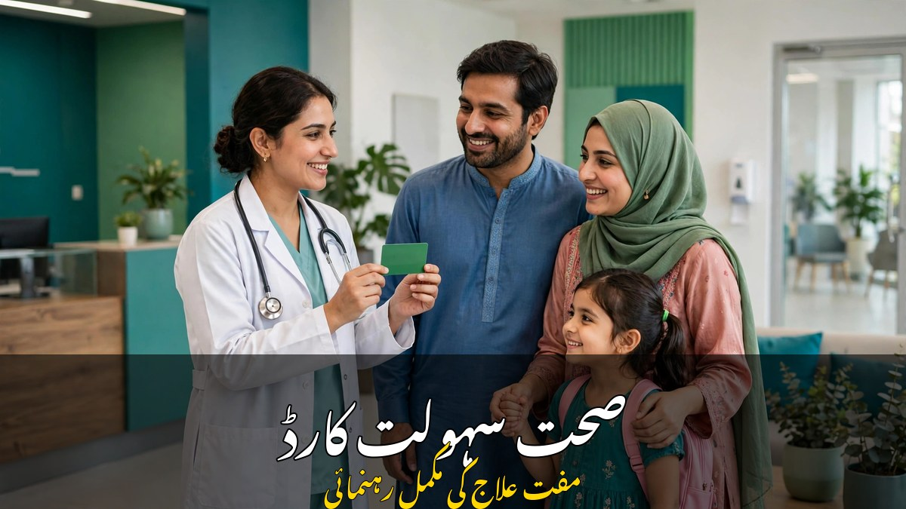

صحت سہولت کارڈ: مفت علاج کا مکمل طریقہ

اچانک بیماری یا آپریشن کا خرچہ عام خاندان کی پوری بچت ختم کر سکتا ہے — سرکاری اسپتال میں بستر نہ ملے اور نجی اسپتال کا بل لاکھوں میں ہو تو آدمی سوچ میں پڑ جاتا ہے کہ علاج کرائے یا گھر چلائے۔ اسی پریشانی کا حل صحت سہولت کارڈ ہے، جس کے ذریعے اہل خاندان منتخب سرکاری اور نجی اسپتالوں میں مفت علاج کرا سکتے ہیں۔ اس مضمون میں کارڈ کی اہلیت، چیک کرنے کا طریقہ، اسپتال کی فہرست اور علاج کا مکمل طریقہ آسان اردو میں بیان کیا گیا ہے۔
1۔ صحت سہولت کارڈ کیا ہے؟
صحت سہولت کارڈ حکومت پاکستان کے صحت سہولت پروگرام کا حصہ ہے، جس کا مقصد ہے کہ غریب اور متوسط خاندانوں کو معیاری علاج مفت ملے۔ اس کارڈ کے ذریعے ہر اہل خاندان کو سالانہ تقریباً دس لاکھ روپے تک کا مفت علاج فراہم کیا جاتا ہے۔ اس رقم سے اسپتال میں داخلے، آپریشن، دوائیں اور ٹیسٹ کرائے جا سکتے ہیں۔ خیبر پختونخوا میں یہ سہولت تقریباً ہر خاندان کو حاصل ہے، جبکہ پنجاب اور دیگر صوبوں میں اس کا دائرہ بتدریج بڑھایا جا رہا ہے۔ اہم بات یہ ہے کہ یہ کوئی قرض نہیں — علاج کی رقم حکومت براہِ راست اسپتال کو ادا کرتی ہے، مریض کو جیب سے کچھ نہیں دینا پڑتا۔
2۔ کارڈ کس کو ملتا ہے؟ اہلیت کی شرائط
کارڈ کی اہلیت کا فیصلہ نادرا کے ریکارڈ اور خاندان کی مالی حالت کی بنیاد پر کیا جاتا ہے۔ عام طور پر درج ذیل خاندان اہل سمجھے جاتے ہیں:
- بینظیر انکم سپورٹ پروگرام کے مستحقین: جو خاندان پہلے سے بی آئی ایس پی سے امداد لے رہے ہیں، وہ عموماً صحت کارڈ کے بھی اہل ہوتے ہیں
- کم آمدنی والے خاندان: جن کی ماہانہ آمدنی مقررہ حد سے کم ہو اور جن کا غربت اسکور مطلوبہ معیار پر پورا اترتا ہو
- خیبر پختونخوا کے تمام خاندان: صوبے میں صحت کارڈ پلس کے تحت تقریباً ہر خاندان اس سہولت سے فائدہ اٹھا سکتا ہے
- پنجاب میں رجسٹرڈ خاندان: پنجاب میں کارڈ بتدریج ان خاندانوں کو دیا جا رہا ہے جن کا ریکارڈ نادرا اور متعلقہ محکموں میں موجود ہے
اہلیت جانچنے کے لیے آپ کا شناختی کارڈ درست اور نادرا کے ریکارڈ میں خاندان کی تفصیل مکمل ہونا ضروری ہے۔ اگر شناختی کارڈ کی میعاد ختم ہو چکی ہو یا خاندان کا ریکارڈ پرانا ہو تو پہلے اسے درست کرائیں، ورنہ اہلیت چیک کرتے وقت مشکل ہو سکتی ہے۔
3۔ اپنی اہلیت کیسے چیک کریں؟
اہلیت چیک کرنا بالکل مفت اور چند منٹ کا کام ہے۔ سب سے آسان طریقہ ایس ایم ایس ہے: اپنے موبائل سے اپنا شناختی کارڈ نمبر (بغیر ڈیش کے) لکھ کر 8500 پر بھیجیں۔ کچھ دیر میں جوابی پیغام آئے گا جس میں بتایا جائے گا کہ آپ اہل ہیں یا نہیں۔ دوسرا طریقہ صحت سہولت پروگرام کی سرکاری ویب سائٹ ہے — وہاں شناختی کارڈ نمبر درج کر کے بھی اہلیت دیکھی جا سکتی ہے۔ تیسرا طریقہ قریبی صحت سہولت کاؤنٹر یا متعلقہ اسپتال کے کارڈ ڈیسک پر جا کر شناختی کارڈ دکھانا ہے، جہاں عملہ آپ کی اہلیت موقع پر بتا دیتا ہے۔
4۔ کارڈ کیسے حاصل کریں؟
اگر آپ اہل ہیں تو کارڈ حاصل کرنے کا طریقہ بھی آسان ہے۔ بہت سے علاقوں میں اب الگ کارڈ بنوانے کی ضرورت نہیں رہی — آپ کا قومی شناختی کارڈ ہی صحت کارڈ کے طور پر کام کرتا ہے، اور اسپتال میں شناختی کارڈ دکھا کر علاج شروع ہو جاتا ہے۔ جہاں علیحدہ کارڈ جاری ہوتا ہے، وہاں آپ اپنے ضلع کے صحت سہولت تقسیم مرکز، نادرا دفتر یا مقرر کردہ اسپتال کے ڈیسک سے کارڈ لے سکتے ہیں۔ کارڈ لیتے وقت اپنا اصل شناختی کارڈ ساتھ لے جائیں، اور اگر خاندان کے کسی اور فرد کے لیے کارڈ بنوانا ہو تو اس کا شناختی کارڈ یا بچوں کا بے فارم ساتھ رکھیں۔
5۔ کن بیماریوں کا علاج مفت ملتا ہے؟
صحت سہولت کارڈ سے اسپتال میں داخلے کے ساتھ ہونے والا علاج شامل ہے۔ اس میں عام طور پر یہ سہولتیں آتی ہیں:
- عام آپریشن جیسے اپینڈکس، ہرنیا، پتہ اور آنکھوں کا آپریشن
- زچگی اور بچے کی پیدائش سے متعلق علاج اور آپریشن
- دل کی بیماریوں کا علاج، بشمول بعض صورتوں میں اسٹنٹ اور بائی پاس
- گردوں کی بیماری اور ڈائیلاسز
- کینسر کا علاج، کیموتھراپی اور ریڈیوتھراپی
- ذیابیطس اور بلڈ پریشر کی پیچیدگیوں کا اسپتال میں علاج
- حادثے یا چوٹ کے بعد اسپتال میں داخلے کا علاج
عام نزلہ زکام یا او پی ڈی میں دوا لینا اس کارڈ سے عام طور پر شامل نہیں ہوتا — کارڈ بنیادی طور پر ان علاجوں کے لیے ہے جن میں اسپتال میں داخلہ ضروری ہو۔ ہر بیماری کی کوریج اور حد مختلف ہو سکتی ہے، اس لیے علاج سے پہلے اسپتال کے صحت کارڈ ڈیسک سے ضرور پوچھ لیں کہ آپ کے مرض کی کوریج کتنی ہے۔
6۔ علاج کے لیے اسپتال کیسے تلاش کریں؟
صحت سہولت کارڈ صرف ان اسپتالوں میں چلتا ہے جو پروگرام کے پینل پر ہوں — ان میں بڑے سرکاری اسپتال اور بہت سے نجی اسپتال شامل ہیں۔ پینل اسپتالوں کی فہرست صحت سہولت پروگرام کی ویب سائٹ پر ضلع کے حساب سے دیکھی جا سکتی ہے، اور ہیلپ لائن 0800-09009 پر کال کر کے بھی اپنے شہر کے قریبی پینل اسپتال کا پتہ پوچھا جا سکتا ہے۔ اسپتال جاتے وقت شناختی کارڈ اور کارڈ (اگر الگ سے ملا ہو) ساتھ لے جائیں، اور داخلے سے پہلے اسپتال کے صحت سہولت ڈیسک پر اپنی اہلیت کی تصدیق کرا لیں۔ کچھ بڑے اسپتالوں میں کارڈ ڈیسک چوبیس گھنٹے کھلا رہتا ہے تاکہ ایمرجنسی میں بھی علاج فوراً شروع ہو سکے۔
7۔ علاج کا طریقہ — قدم بہ قدم
علاج کا طریقہ سمجھ لیں تو اسپتال میں پریشانی نہیں ہوتی۔ پہلے اپنے مرض کے مطابق پینل اسپتال کا انتخاب کریں اور شناختی کارڈ ساتھ لے کر جائیں۔ اسپتال پہنچ کر صحت سہولت ڈیسک پر جائیں — وہاں آپ کی اہلیت اور کارڈ کی بیلنس چیک کی جائے گی۔ پھر ڈاکٹر معائنہ کرے گا اور اگر داخلہ ضروری ہوا تو داخلہ کارڈ کے تحت ہوگا۔ داخلے کے دوران دوائیں، ٹیسٹ اور آپریشن کارڈ کی حد کے اندر مفت ہوں گے۔ چھٹی کے وقت اسپتال خود کارڈ سے رقم وصول کرے گا — آپ سے کوئی بل نہیں مانگا جائے گا۔
8۔ عام غلطیاں اور فراڈ سے بچاؤ
- صحت کارڈ بنوانے یا اہلیت چیک کرنے کے لیے کبھی کسی کو پیسے نہ دیں — یہ ساری سہولت مفت ہے
- کوئی شخص فون پر کارڈ بنانے کے بدلے رقم یا بینک تفصیل مانگے تو فوراً شکایت کریں — سرکاری ادارہ کبھی فون پر پیسے نہیں مانگتا
- کارڈ کسی اور کو نہ دیں اور نہ ہی اس کی تصویر سوشل میڈیا پر ڈالیں — اس سے غلط استعمال ہو سکتا ہے
- غیر پینل اسپتال میں کارڈ دکھا کر علاج کی امید نہ رکھیں — پہلے پینل اسپتال کی فہرست ضرور دیکھیں
- علاج سے پہلے کارڈ کی بیلنس اور بیماری کی کوریج اسپتال سے پوچھ لیں تاکہ بعد میں کوئی الجھن نہ ہو
- اگر آپ کی اہلیت کا جواب نہ آئے یا کارڈ نہ ملے تو متعلقہ ضلعی دفتر یا ہیلپ لائن سے رابطہ کریں، کسی ایجنٹ کے پیچھے نہ بھاگیں
صحت سہولت کارڈ ان خاندانوں کے لیے ایک بڑی سہولت ہے جن کے پاس مہنگا علاج کرانے کی گنجائش نہیں۔ اگر آپ اہل ہیں تو آج ہی اپنی اہلیت چیک کریں اور کارڈ کا استعمال سمجھ لیں — بیماری کا انتظار نہ کریں، کیونکہ ایمرجنسی میں یہ معلومات بہت کام آتی ہیں۔ اپنے خاندان اور محلے کے ان لوگوں کو بھی اس بارے میں بتائیں جو اہل ہو سکتے ہیں، تاکہ یہ سہولت ہر مستحق تک پہنچے۔